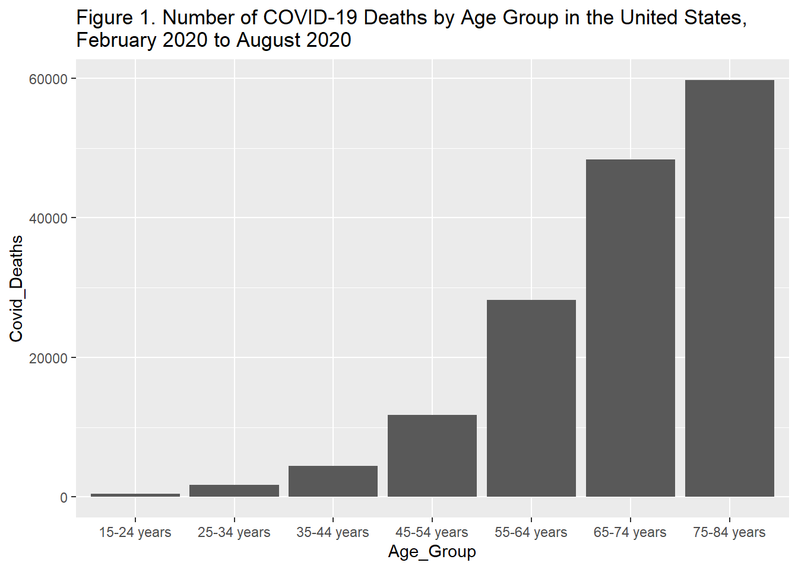
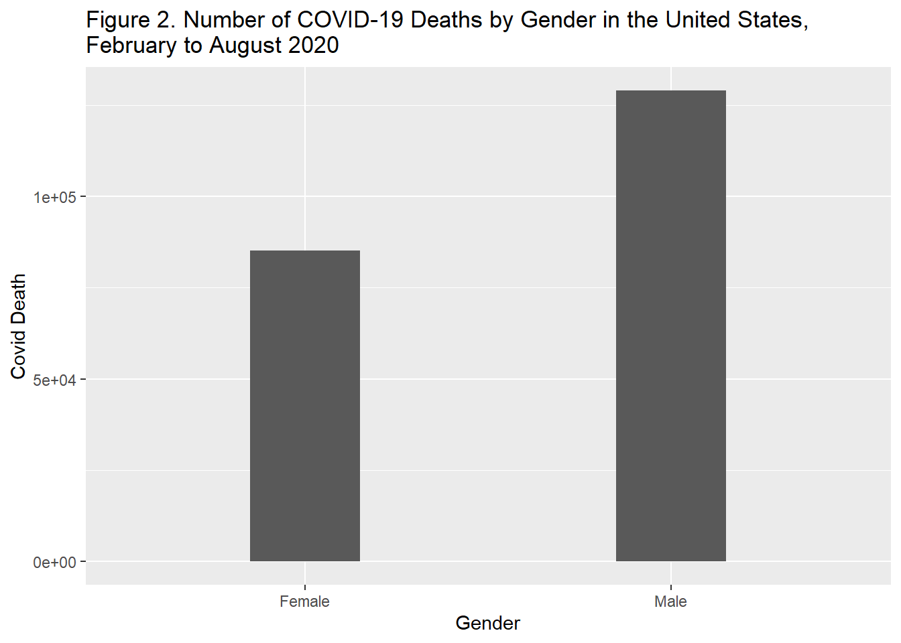
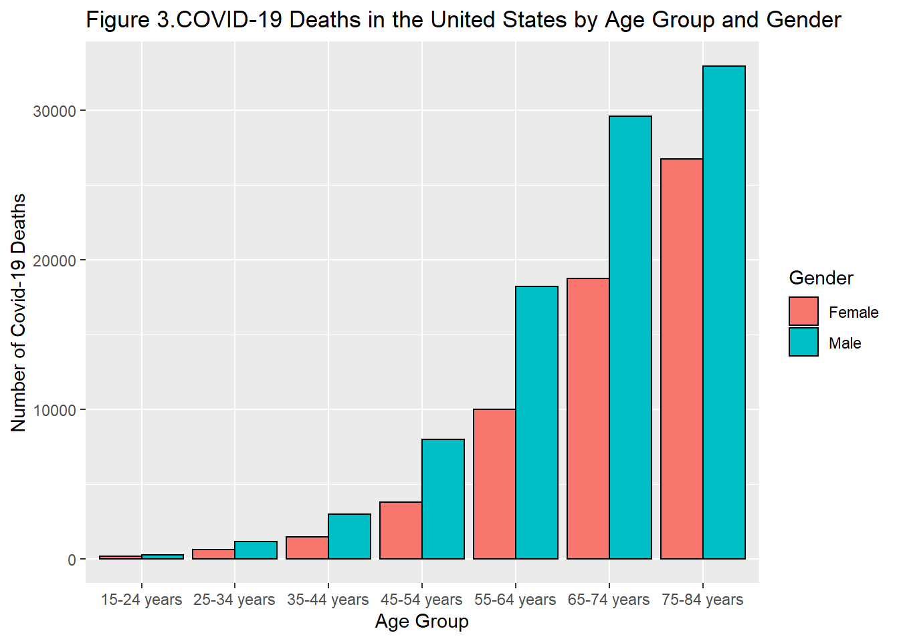
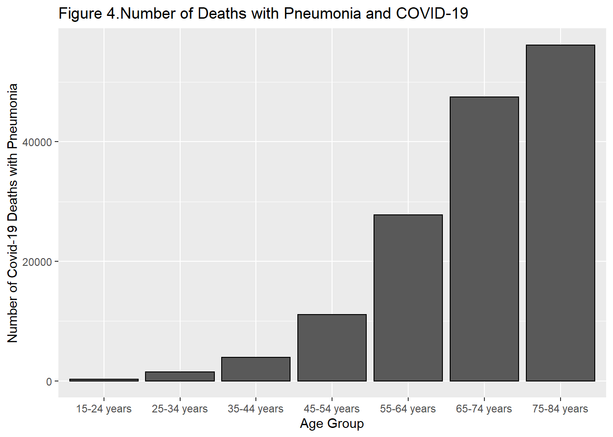
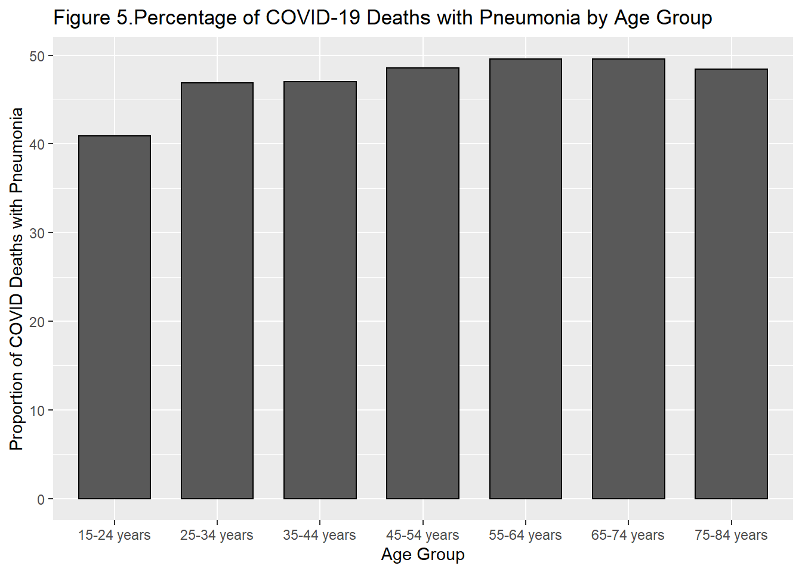

The COVID-19 pandemic still heavily impacts the United States, with the US surpassing over 200,000 deaths since cases have first been recorded. As of November 16th, when this report was written, the number of Covid-19 cases and deaths have risen drastically throughout the United States. To shed further insight into the severity of the pandemic, the “Provisional COVID-19 Death Count by Sex, Age, and State” (https://data.cdc.gov/resource/9bhg-hcku.json) data was taken from the Center for Disease Control and analyzed. The data includes the number of COCIVD-19 deaths between February 2020 and August 2020 that was reported to the National Center for Health Statistics by sex and age group. In addition, the number of deaths due in which pneumonia, often caused by severe COVID symptoms,was diagnosed alongside with Covid-19 was also included in the data set. Data gathered by this data set is incomplete due to the length of time in which it takes for a death certificate to be completed and submitted to the NCHS after death. Furthermore, the number of Covid-19 deaths listed in this report does not accurately reflect the current state of the pandemic as the dataset only included Covid-19 data from February 2020 and August 2020.
The main purpose of this report is to analyze:
1)The effect of age, gender, and state on the COVID-19 mortality rate.
2)The frequency of pneumonia in COVID-19 patients, and its affect on patient mortality.
The dataset, “Provisional COVID-19 Death Count by Sex, Age, and State” (https://data.cdc.gov/resource/9bhg-hcku.json), was accessed from the Center for Disease Control website through an API. Once downloaded, the desired information was extracted through regular expressions and formed into a data table. The key independent variables that were examined in this study were age, gender, and state while the data of interest included number of deaths from COVID-19, number of deaths from pneumonia, and the number of deaths which both COVID-19 and pneumonia were involved.
The age variable was separated into different age groups, including ranges from 0-17, 15-24, 18-29, etc. When the age group was extracted from the raw data, there were observations that did not include data regarding the age. Therefore, those observations were removed.
In addition, there were also overlapping age-ranges in the data set. To prevent double-counting of deaths, the overlapping age-ranges were removed. The final age groups started from age 5 to age 84, broken down into increments of 10 years (5-14,15-24,26-35, etc.)
To ensure the accuracy of the data cleaning process, the number of Covid-19 deaths per age composition was added to determine if it was equal to the total number of Covid-19 deaths reported across all age groups.
The number of deaths due to COVID-19 was separated by gender. Some observation listed the gender as “All Genders.” Because the goal of this project is to determine the influence of gender on COVID-19 mortality, these values were removed. In addition, removing those values would prevent double-counting of the data. Cases where the gender was unknown were also removed.
To ensure the accuracy of the data, the number of COVID-19 deaths for each gender was added to determine if it was equal to the total number of Covid-19 deaths reported throughout all genders.
The number of deaths due to Covid-19 was separated by state. In the original dataset, New York City was listed as a separate category than the state of New York due to the large amount of Covid-19 cases centralized in that area. The number of covid-19 cases in New York City was added to the state totals. US Territories such as Puerto Rico was also included in the original dataset. However, because the focus of this dataset is on individual states, the data for Puerto Rico was excluded.
The number of COVID-19 Deaths, Pneumonia Deaths, and deaths involving both Covid-19 and Pneumonia, were all organized by age group. The same age range was included the initial analysis of age group and Covid-19 mortality. Data in which the gender not known, as well as overlapping age categories were excluded from this analysis. The numbers from the resulting analysis may be incomplete due to missing data and lag in the reporting of deaths due to all three conditions.
All of the preliminary tables and figures were made through knitrr and ggplot2. Interactive figures (published on the website: https://eshkim1021.github.io/PM-566-Final/) were made by the Data Table package and the plotly package.
The following table and figure analyze the relationship between age group and Covid-19 death:
| Age_Group | Covid_Deaths |
|---|---|
| 5-14 years | 39 |
| 15-24 years | 410 |
| 25-34 years | 1725 |
| 35-44 years | 4426 |
| 45-54 years | 11738 |
| 55-64 years | 28227 |
| 65-74 years | 48362 |
| 75-84 years | 59759 |
The table above lists the number of Covid-19 deaths for each age group in the United States from February to August 2020. The numbers range from 35 deaths, for those between 5-14 years old, to 52,617 deaths, for those in between 75-84 years old.

Figure 1 illustrates the number of Covid-19 deaths by age group in the United States from February to August 2020. The age group of 5-14 years was removed from the data set as the number of deaths due to Covid-19 was significantly less than the other age groups. There was 35 deaths from Covid-19 in the age group of 5-14, which comprised of <0.025% of the total Covid-19 death.
According to Figure 1, the number of deaths due to Covid-19 increased for every age group. The older the patient, the greater the Covid-19 mortality rate. The increase in the number of deaths was particular pronounced after the age of 55, as the number of deaths seems to increase exponentially for each increase in age group.
The following table shows the difference in Covid-19 deaths by gender in the United States from February 2020 to August 2020.
| Gender | Covid Death |
|---|---|
| Female | 85121 |
| Male | 128978 |
The number of males that have died due to Covid-19 is 114,291, while the number of females that have died due to Covid-19 is 75,203. These numbers are different from the total number of Covid-19 deaths calculated from the Covid-19 due to age distribution because different observations were omitted depending on the unknown or repetitive variables for each category.

Figure 2 illustrates the difference in the number of Covid-19 deaths in the United States by gender from February to August 2020. The cases in which the gender was unknown were removed from this figure. According to the data, there have been more cases of males dying due to Covid-19 than females. The ratio of males to females that have died due to COVID-19 is 1.520, indicating that the number of males that have died from Covid-19 is 1.520 times greater than the number of females that have died.

Figure 3 illustrates the number of Covid-19 deaths by age group and gender in the United States from February to August 2020. The gender distribution of the number of Covid-19 deaths for each age group mirrors that of the overall population of the United States. In each age group, the number of male deaths from Covid-19 are greater than that of females. 4
The following table shows the number of deaths from Covid-19 for each state and the District of Columbia. The state of New York had a most deaths due to Covid-19 from February to August 2020, largely in part due to the large number of cases in New York City. The state of Wyoming had the least reported Covid-19 deaths during this time period. It is important to note, however, that this dataset does not included the population of each state, which can act as a counfounding factor for the number of deaths due to Covid-19.
| State | COVID-19 Deaths |
|---|---|
| Alabama | 3272 |
| Alaska | 42 |
| Arizona | 4992 |
| Arkansas | 1173 |
| California | 14982 |
| Colorado | 1960 |
| Connecticut | 4410 |
| Delaware | 563 |
| District of Columbia | 756 |
| Florida | 14351 |
| Georgia | 5911 |
| Hawaii | 150 |
| Idaho | 471 |
| Illinois | 7791 |
| Indiana | 3569 |
| Iowa | 1308 |
| Kansas | 709 |
| Kentucky | 1205 |
| Louisiana | 4768 |
| Maine | 159 |
| Maryland | 4232 |
| Massachusetts | 8062 |
| Michigan | 6209 |
| Minnesota | 1975 |
| Mississippi | 2767 |
| Missouri | 2014 |
| Montana | 142 |
| Nebraska | 481 |
| Nevada | 1446 |
| New Hampshire | 418 |
| New Jersey | 14297 |
| New Mexico | 793 |
| New York | 32366 |
| North Carolina | 2409 |
| North Dakota | 210 |
| Ohio | 4254 |
| Oklahoma | 1070 |
| Oregon | 511 |
| Pennsylvania | 8295 |
| Rhode Island | 1054 |
| South Carolina | 3137 |
| South Dakota | 234 |
| Tennessee | 2202 |
| Texas | 15950 |
| Utah | 458 |
| Vermont | 59 |
| Virginia | 3091 |
| Washington | 1859 |
| West Virginia | 254 |
| Wisconsin | 1262 |
| Wyoming | 38 |
An interactive map detailing the deaths due to Covid-19 by state can be found on the website: (https://eshkim1021.github.io/PM-566-Final/)
The following table shows the number of deaths for each condition (Covid-19, Pneumonia, Covid and Pneumonia) by age group.
| Age_Group | Covid_Deaths | Pneumonia_Deaths | Covid_and_Pneumonia_Deaths | |
|---|---|---|---|---|
| 5 | 5-14 years | 39 | 228 | 14 |
| 1 | 15-24 years | 410 | 1068 | 284 |
| 2 | 25-34 years | 1725 | 3820 | 1522 |
| 3 | 35-44 years | 4426 | 8594 | 3926 |
| 4 | 45-54 years | 11738 | 22430 | 11072 |
| 6 | 55-64 years | 28227 | 60114 | 27782 |
| 7 | 65-74 years | 48362 | 102410 | 47494 |
| 8 | 75-84 years | 59759 | 125488 | 56196 |
The number of deaths for each condition increased as the individual gets older, which is expected. The number of Covid deaths recorded does not include the number of deaths where both Covid-19 and pneumonia are found.

Figure 4 illustrates the number of deaths in which both Covid-19 and Pneumonia were involved. The number of cases with Covid-19 and pneumonia increase with age, and reaches the highest values at those between 75-84 years of age.

Figure 5 illustrates the percentage of deaths in which both Covid-19 and Pneumonia were present compared to the total number of deaths due to Covid-19. Throughout most age groups, the percentage of deaths in which both Covid-19 and Pneumonia are present account for around 40-50% of the total Covid-19 deaths. It stays relatively consistent throughout the age groups.
In conclusion, the number of deaths due to Covid-19 is influenced by age and gender. It was found that the number of deaths due to Covid-19 increase with age, with there being the most deaths from individuals in between the ages of 75-84. There was a greater number of Covid-19 deaths in males than females. In addition, it was determined that a majority of the deaths due to Covid-19 were in states with large populations, such as New York and California. Also, pneumonia was prsent in around 50% of the deaths due to Covid-19, with that percentage staying relatively similar throughout all the age groups. Although pneumonia is found in around half of Covid-19 cases, there is not enough information in this data set to determine if a co-diagnosis of pneumonia lead to an increase in mortality rate from Covid-19.